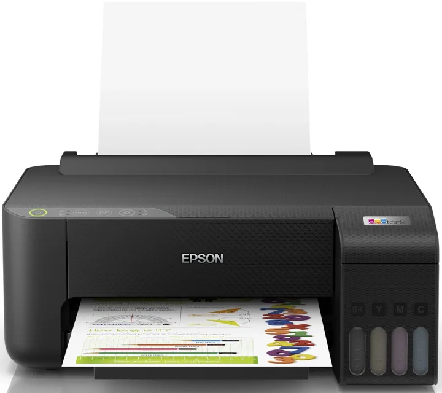
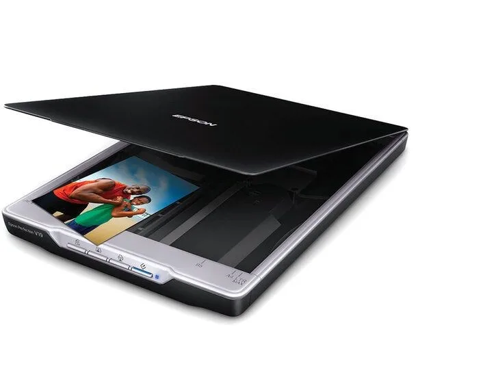
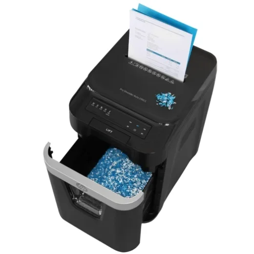
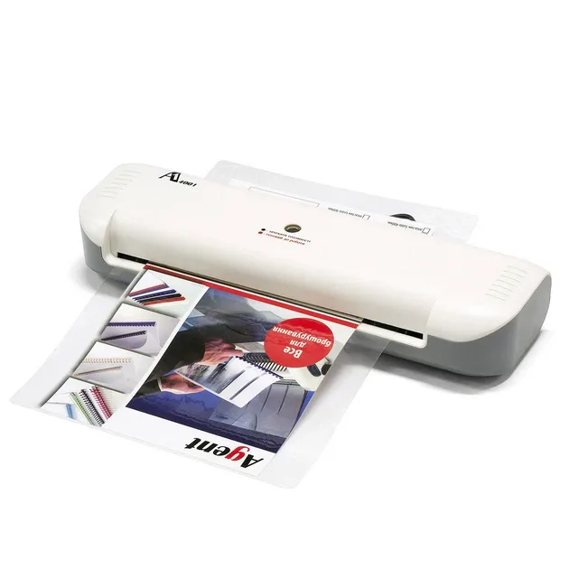

Розділ 11 · Тема 5 · Тест
Засоби обробки документів
12 питань з фото пристроїв і програм + одне відкрите. Відповідай, натисни «Перевірити», подивись пояснення — і надішли результат учителю.

Відповіді:
Що це за пристрій і яка його головна особливість?
💡 Збоку видно прозорі ємності з чорнилом чотирьох кольорів (BK, Y, M, C) — це система безперервної подачі чорнила (СНПЧ, EcoTank).

Для чого використовують цей пристрій?
💡 Це планшетний сканер: кладеш документ на скло, і він створює цифрову копію (PDF, JPG).

Що робить цей пристрій?
💡 Це шредер: у кошику видно «конфеті» з паперу. Ним знищують документи з персональними та конфіденційними даними.

Навіщо пропускають документ через цей пристрій?
💡 Ламінатор запаює аркуш у прозору плівку: документ не мокне й не мнеться. Так захищають бейджі, інструкції, меню.
Яка роздільна здатність достатня для сканування текстових документів?
💡 300 dpi — оптимально для тексту: чітко і файл не надто великий. 72 dpi — замало, 2400 — завеликий файл без потреби.
OCR — це…
💡 OCR (Optical Character Recognition) перетворює зображення тексту на текст, який можна редагувати й шукати. Безкоштовно — Google Lens, Google Диск.
Чому договір зазвичай надсилають у PDF, а не у DOCX?
💡 PDF «фіксує» вигляд документа: шрифти й поля не з’їдуть, а текст не зміниться випадково. Саме PDF підписують КЕП.
Як у Google Документах зберегти файл як PDF?
💡 Файл → Завантажити → PDF. Також підходить універсальний спосіб: Друк → «Зберегти як PDF».
Яка можливість Google Документів найкорисніша для командної роботи?
💡 Кілька людей одночасно редагують один документ, обговорюють у коментарях і можуть повернути будь-яку попередню версію.
БФП (багатофункціональний пристрій) поєднує в собі…
💡 БФП = принтер + сканер + копір (іноді ще й факс) в одному корпусі.
Які паперові документи обов’язково знищують шредером, а не викидають у смітник?
💡 Персональні дані захищає закон. Викинутий документ можуть дістати й використати шахраї.
Познач усі ПРОГРАМНІ засоби обробки документів: кілька правильних
💡 Програмні засоби — це програми й сервіси: Google Документи, LibreOffice Writer, Adobe Acrobat Reader, Google Lens. Ламінатор і шредер — технічні (апаратні) засоби.